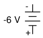
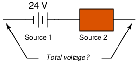

If I needed to describe the distance between two cities, I could provide an answer consisting of a single number in miles, kilometers, or some other unit of linear measurement. However, if I were to describe how to travel from one city to another, I would have to provide more information than just the distance between those two cities; I would also have to provide information about the direction to travel, as well.
The kind of information that expresses a single dimension, such as linear distance, is called a scalar quantity in mathematics. Scalar numbers are the kind of numbers you've used in most all of your mathematical applications so far. The voltage produced by a battery, for example, is a scalar quantity. So is the resistance of a piece of wire (ohms), or the current through it (amps).
However, when we begin to analyze alternating current circuits, we find that quantities of voltage, current, and even resistance (called impedance in AC) are not the familiar one-dimensional quantities we're used to measuring in DC circuits. Rather, these quantities, because they're dynamic (alternating in direction and amplitude), possess other dimensions that must be taken into account. Frequency and phase shift are two of these dimensions that come into play. Even with relatively simple AC circuits, where we're only dealing with a single frequency, we still have the dimension of phase shift to contend with in addition to the amplitude.
In order to successfully analyze AC circuits, we need to work with mathematical objects and techniques capable of representing these multi-dimensional quantities. Here is where we need to abandon scalar numbers for something better suited: complex numbers. Just like the example of giving directions from one city to another, AC quantities in a single-frequency circuit have both amplitude (analogy: distance) and phase shift (analogy: direction). A complex number is a single mathematical quantity able to express these two dimensions of amplitude and phase shift at once.
Complex numbers are easier to grasp when they're represented graphically. If I draw a line with a certain length (magnitude) and angle (direction), I have a graphic representation of a complex number which is commonly known in physics as a vector: (Figure below)
A vector has both magnitude and direction.
Like distances and directions on a map, there must be some common frame of reference for angle figures to have any meaning. In this case, directly right is considered to be 0o, and angles are counted in a positive direction going counter-clockwise: (Figure below)
The vector compass
The idea of representing a number in graphical form is nothing new. We all learned this in grade school with the “number line:” (Figure below)
Number line.
We even learned how addition and subtraction works by seeing how lengths (magnitudes) stacked up to give a final answer: (Figure below)
Addition on a “number line”.
Later, we learned that there were ways to designate the values between the whole numbers marked on the line. These were fractional or decimal quantities: (Figure below)
Locating a fraction on the “number line”
Later yet we learned that the number line could extend to the left of zero as well: (Figure below)
“Number line” shows both positive and negative numbers.
These fields of numbers (whole, integer, rational, irrational, real, etc.) learned in grade school share a common trait: they're all one-dimensional. The straightness of the number line illustrates this graphically. You can move up or down the number line, but all “motion” along that line is restricted to a single axis (horizontal). One-dimensional, scalar numbers are perfectly adequate for counting beads, representing weight, or measuring DC battery voltage, but they fall short of being able to represent something more complex like the distance and direction between two cities, or the amplitude and phase of an AC waveform. To represent these kinds of quantities, we need multidimensional representations. In other words, we need a number line that can point in different directions, and that's exactly what a vector is.
OK, so how exactly can we represent AC quantities of voltage or current in the form of a vector? The length of the vector represents the magnitude (or amplitude) of the waveform, like this: (Figure below)
Vector length represents AC voltage magnitude.
The greater the amplitude of the waveform, the greater the length of its corresponding vector. The angle of the vector, however, represents the phase shift in degrees between the waveform in question and another waveform acting as a “reference” in time. Usually, when the phase of a waveform in a circuit is expressed, it is referenced to the power supply voltage waveform (arbitrarily stated to be “at” 0o). Remember that phase is always a relative measurement between two waveforms rather than an absolute property. (Figure below) (Figure below)

Vector angle is the phase with respect to another waveform.
Phase shift between waves and vector phase angle
The greater the phase shift in degrees between two waveforms, the greater the angle difference between the corresponding vectors. Being a relative measurement, like voltage, phase shift (vector angle) only has meaning in reference to some standard waveform. Generally this “reference” waveform is the main AC power supply voltage in the circuit. If there is more than one AC voltage source, then one of those sources is arbitrarily chosen to be the phase reference for all other measurements in the circuit.
This concept of a reference point is not unlike that of the “ground” point in a circuit for the benefit of voltage reference. With a clearly defined point in the circuit declared to be “ground,” it becomes possible to talk about voltage “on” or “at” single points in a circuit, being understood that those voltages (always relative between two points) are referenced to “ground.” Correspondingly, with a clearly defined point of reference for phase it becomes possible to speak of voltages and currents in an AC circuit having definite phase angles. For example, if the current in an AC circuit is described as “24.3 milliamps at -64 degrees,” it means that the current waveform has an amplitude of 24.3 mA, and it lags 64o behind the reference waveform, usually assumed to be the main source voltage waveform.
Remember that vectors are mathematical objects just like numbers on a number line: they can be added, subtracted, multiplied, and divided. Addition is perhaps the easiest vector operation to visualize, so we'll begin with that. If vectors with common angles are added, their magnitudes (lengths) add up just like regular scalar quantities: (Figure below)
Vector magnitudes add like scalars for a common angle.
Similarly, if AC voltage sources with the same phase angle are connected together in series, their voltages add just as you might expect with DC batteries: (Figure below)
“In phase” AC voltages add like DC battery voltages.
Please note the (+) and (-) polarity marks next to the leads of the two AC sources. Even though we know AC doesn't have “polarity” in the same sense that DC does, these marks are essential to knowing how to reference the given phase angles of the voltages. This will become more apparent in the next example.
If vectors directly opposing each other (180o out of phase) are added together, their magnitudes (lengths) subtract just like positive and negative scalar quantities subtract when added: (Figure below)
Directly opposing vector magnitudes subtract.
Similarly, if opposing AC voltage sources are connected in series, their voltages subtract as you might expect with DC batteries connected in an opposing fashion: (Figure below)
Opposing AC voltages subtract like opposing battery voltages.
Determining whether or not these voltage sources are opposing each other requires an examination of their polarity markings and their phase angles. Notice how the polarity markings in the above diagram seem to indicate additive voltages (from left to right, we see - and + on the 6 volt source, - and + on the 8 volt source). Even though these polarity markings would normally indicate an additive effect in a DC circuit (the two voltages working together to produce a greater total voltage), in this AC circuit they're actually pushing in opposite directions because one of those voltages has a phase angle of 0o and the other a phase angle of 180o. The result, of course, is a total voltage of 2 volts.
We could have just as well shown the opposing voltages subtracting in series like this: (Figure below)
Opposing voltages in spite of equal phase angles.
Note how the polarities appear to be opposed to each other now, due to the reversal of wire connections on the 8 volt source. Since both sources are described as having equal phase angles (0o), they truly are opposed to one another, and the overall effect is the same as the former scenario with “additive” polarities and differing phase angles: a total voltage of only 2 volts. (Figure below)
Just as there are two ways to express the phase of the sources, there are two ways to express the resultant their sum.
The resultant voltage can be expressed in two different ways: 2 volts at 180o with the (-) symbol on the left and the (+) symbol on the right, or 2 volts at 0o with the (+) symbol on the left and the (-) symbol on the right. A reversal of wires from an AC voltage source is the same as phase-shifting that source by 180o. (Figure below)
Example of equivalent voltage sources.
If vectors with uncommon angles are added, their magnitudes (lengths) add up quite differently than that of scalar magnitudes: (Figure below)
Vector magnitudes do not directly add for unequal angles.
If two AC voltages -- 90o out of phase -- are added together by being connected in series, their voltage magnitudes do not directly add or subtract as with scalar voltages in DC. Instead, these voltage quantities are complex quantities, and just like the above vectors, which add up in a trigonometric fashion, a 6 volt source at 0o added to an 8 volt source at 90o results in 10 volts at a phase angle of 53.13o: (Figure below)
The 6V and 8V sources add to 10V with the help of trigonometry.
Compared to DC circuit analysis, this is very strange indeed. Note that it is possible to obtain voltmeter indications of 6 and 8 volts, respectively, across the two AC voltage sources, yet only read 10 volts for a total voltage!
There is no suitable DC analogy for what we're seeing here with two AC voltages slightly out of phase. DC voltages can only directly aid or directly oppose, with nothing in between. With AC, two voltages can be aiding or opposing one another to any degree between fully-aiding and fully-opposing, inclusive. Without the use of vector (complex number) notation to describe AC quantities, it would be very difficult to perform mathematical calculations for AC circuit analysis.
In the next section, we'll learn how to represent vector quantities in symbolic rather than graphical form. Vector and triangle diagrams suffice to illustrate the general concept, but more precise methods of symbolism must be used if any serious calculations are to be performed on these quantities.
In order to work with these complex numbers without drawing vectors, we first need some kind of standard mathematical notation. There are two basic forms of complex number notation: polar and rectangular.
Polar form is where a complex number is denoted by the length (otherwise known as the magnitude, absolute value, or modulus) and the angle of its vector (usually denoted by an angle symbol that looks like this: ∠). To use the map analogy, polar notation for the vector from New York City to San Diego would be something like “2400 miles, southwest.” Here are two examples of vectors and their polar notations: (Figure below)
Vectors with polar notations.
Standard orientation for vector angles in AC circuit calculations defines 0o as being to the right (horizontal), making 90o straight up, 180o to the left, and 270o straight down. Please note that vectors angled “down” can have angles represented in polar form as positive numbers in excess of 180, or negative numbers less than 180. For example, a vector angled ∠ 270o (straight down) can also be said to have an angle of -90o. (Figure below) The above vector on the right (7.81 ∠ 230.19o) can also be denoted as 7.81 ∠ -129.81o.
The vector compass
Rectangular form, on the other hand, is where a complex number is denoted by its respective horizontal and vertical components. In essence, the angled vector is taken to be the hypotenuse of a right triangle, described by the lengths of the adjacent and opposite sides. Rather than describing a vector's length and direction by denoting magnitude and angle, it is described in terms of “how far left/right” and “how far up/down.”
These two dimensional figures (horizontal and vertical) are symbolized by two numerical figures. In order to distinguish the horizontal and vertical dimensions from each other, the vertical is prefixed with a lower-case “i” (in pure mathematics) or “j” (in electronics). These lower-case letters do not represent a physical variable (such as instantaneous current, also symbolized by a lower-case letter “i”), but rather are mathematical operators used to distinguish the vector's vertical component from its horizontal component. As a complete complex number, the horizontal and vertical quantities are written as a sum: (Figure below)
In “rectangular” form the vector's length and direction are denoted in terms of its horizontal and vertical span, the first number representing the the horizontal (“real”) and the second number (with the “j” prefix) representing the vertical (“imaginary”) dimensions.
The horizontal component is referred to as the real component, since that dimension is compatible with normal, scalar (“real”) numbers. The vertical component is referred to as the imaginary component, since that dimension lies in a different direction, totally alien to the scale of the real numbers. (Figure below)

Vector compass showing real and imaginary axes
The “real” axis of the graph corresponds to the familiar number line we saw earlier: the one with both positive and negative values on it. The “imaginary” axis of the graph corresponds to another number line situated at 90o to the “real” one. Vectors being two-dimensional things, we must have a two-dimensional “map” upon which to express them, thus the two number lines perpendicular to each other: (Figure below)
Vector compass with real and imaginary (“j”) number lines.
Either method of notation is valid for complex numbers. The primary reason for having two methods of notation is for ease of longhand calculation, rectangular form lending itself to addition and subtraction, and polar form lending itself to multiplication and division.
Conversion between the two notational forms involves simple trigonometry. To convert from polar to rectangular, find the real component by multiplying the polar magnitude by the cosine of the angle, and the imaginary component by multiplying the polar magnitude by the sine of the angle. This may be understood more readily by drawing the quantities as sides of a right triangle, the hypotenuse of the triangle representing the vector itself (its length and angle with respect to the horizontal constituting the polar form), the horizontal and vertical sides representing the “real” and “imaginary” rectangular components, respectively: (Figure below)
Magnitude vector in terms of real (4) and imaginary (j3) components.
To convert from rectangular to polar, find the polar magnitude through the use of the Pythagorean Theorem (the polar magnitude is the hypotenuse of a right triangle, and the real and imaginary components are the adjacent and opposite sides, respectively), and the angle by taking the arctangent of the imaginary component divided by the real component:

Since complex numbers are legitimate mathematical entities, just like scalar numbers, they can be added, subtracted, multiplied, divided, squared, inverted, and such, just like any other kind of number. Some scientific calculators are programmed to directly perform these operations on two or more complex numbers, but these operations can also be done “by hand.” This section will show you how the basic operations are performed. It is highly recommended that you equip yourself with a scientific calculator capable of performing arithmetic functions easily on complex numbers. It will make your study of AC circuit much more pleasant than if you're forced to do all calculations the longer way.
Addition and subtraction with complex numbers in rectangular form is easy. For addition, simply add up the real components of the complex numbers to determine the real component of the sum, and add up the imaginary components of the complex numbers to determine the imaginary component of the sum:
When subtracting complex numbers in rectangular form, simply subtract the real component of the second complex number from the real component of the first to arrive at the real component of the difference, and subtract the imaginary component of the second complex number from the imaginary component of the first to arrive the imaginary component of the difference:
For longhand multiplication and division, polar is the favored notation to work with. When multiplying complex numbers in polar form, simply multiply the polar magnitudes of the complex numbers to determine the polar magnitude of the product, and add the angles of the complex numbers to determine the angle of the product:
Division of polar-form complex numbers is also easy: simply divide the polar magnitude of the first complex number by the polar magnitude of the second complex number to arrive at the polar magnitude of the quotient, and subtract the angle of the second complex number from the angle of the first complex number to arrive at the angle of the quotient:
To obtain the reciprocal, or “invert” (1/x), a complex number, simply divide the number (in polar form) into a scalar value of 1, which is nothing more than a complex number with no imaginary component (angle = 0):
These are the basic operations you will need to know in order to manipulate complex numbers in the analysis of AC circuits. Operations with complex numbers are by no means limited just to addition, subtraction, multiplication, division, and inversion, however. Virtually any arithmetic operation that can be done with scalar numbers can be done with complex numbers, including powers, roots, solving simultaneous equations with complex coefficients, and even trigonometric functions (although this involves a whole new perspective in trigonometry called hyperbolic functions which is well beyond the scope of this discussion). Be sure that you're familiar with the basic arithmetic operations of addition, subtraction, multiplication, division, and inversion, and you'll have little trouble with AC circuit analysis.
Complex numbers are useful for AC circuit analysis because they provide a convenient method of symbolically denoting phase shift between AC quantities like voltage and current. However, for most people the equivalence between abstract vectors and real circuit quantities is not an easy one to grasp. Earlier in this chapter we saw how AC voltage sources are given voltage figures in complex form (magnitude and phase angle), as well as polarity markings. Being that alternating current has no set “polarity” as direct current does, these polarity markings and their relationship to phase angle tends to be confusing. This section is written in the attempt to clarify some of these issues.
Voltage is an inherently relative quantity. When we measure a voltage, we have a choice in how we connect a voltmeter or other voltage-measuring instrument to the source of voltage, as there are two points between which the voltage exists, and two test leads on the instrument with which to make connection. In DC circuits, we denote the polarity of voltage sources and voltage drops explicitly, using “+” and “-” symbols, and use color-coded meter test leads (red and black). If a digital voltmeter indicates a negative DC voltage, we know that its test leads are connected “backward” to the voltage (red lead connected to the “-” and black lead to the “+”).
Batteries have their polarity designated by way of intrinsic symbology: the short-line side of a battery is always the negative (-) side and the long-line side always the positive (+): (Figure below)
Conventional battery polarity.
Although it would be mathematically correct to represent a battery's voltage as a negative figure with reversed polarity markings, it would be decidedly unconventional: (Figure below)

Decidedly unconventional polarity marking.
Interpreting such notation might be easier if the “+” and “-” polarity markings were viewed as reference points for voltmeter test leads, the “+” meaning “red” and the “-” meaning “black.” A voltmeter connected to the above battery with red lead to the bottom terminal and black lead to the top terminal would indeed indicate a negative voltage (-6 volts). Actually, this form of notation and interpretation is not as unusual as you might think: it is commonly encountered in problems of DC network analysis where “+” and “-” polarity marks are initially drawn according to educated guess, and later interpreted as correct or “backward” according to the mathematical sign of the figure calculated.
In AC circuits, though, we don't deal with “negative” quantities of voltage. Instead, we describe to what degree one voltage aids or opposes another by phase: the time-shift between two waveforms. We never describe an AC voltage as being negative in sign, because the facility of polar notation allows for vectors pointing in an opposite direction. If one AC voltage directly opposes another AC voltage, we simply say that one is 180o out of phase with the other.
Still, voltage is relative between two points, and we have a choice in how we might connect a voltage-measuring instrument between those two points. The mathematical sign of a DC voltmeter's reading has meaning only in the context of its test lead connections: which terminal the red lead is touching, and which terminal the black lead is touching. Likewise, the phase angle of an AC voltage has meaning only in the context of knowing which of the two points is considered the “reference” point. Because of this fact, “+” and “-” polarity marks are often placed by the terminals of an AC voltage in schematic diagrams to give the stated phase angle a frame of reference.
Let's review these principles with some graphical aids. First, the principle of relating test lead connections to the mathematical sign of a DC voltmeter indication: (Figure below)
Test lead colors provide a frame of reference for interpreting the sign (+ or -) of the meter's indication.
The mathematical sign of a digital DC voltmeter's display has meaning only in the context of its test lead connections. Consider the use of a DC voltmeter in determining whether or not two DC voltage sources are aiding or opposing each other, assuming that both sources are unlabeled as to their polarities. Using the voltmeter to measure across the first source: (Figure below)
(+) Reading indicates black is (-), red is (+).
This first measurement of +24 across the left-hand voltage source tells us that the black lead of the meter really is touching the negative side of voltage source #1, and the red lead of the meter really is touching the positive. Thus, we know source #1 is a battery facing in this orientation: (Figure below)

24V source is polarized (-) to (+).
Measuring the other unknown voltage source: (Figure below)
(-) Reading indicates black is (+), red is (-).
This second voltmeter reading, however, is a negative (-) 17 volts, which tells us that the black test lead is actually touching the positive side of voltage source #2, while the red test lead is actually touching the negative. Thus, we know that source #2 is a battery facing in the opposite direction: (Figure below)
17V source is polarized (+) to (-)
It should be obvious to any experienced student of DC electricity that these two batteries are opposing one another. By definition, opposing voltages subtract from one another, so we subtract 17 volts from 24 volts to obtain the total voltage across the two: 7 volts.
We could, however, draw the two sources as nondescript boxes, labeled with the exact voltage figures obtained by the voltmeter, the polarity marks indicating voltmeter test lead placement: (Figure below)
Voltmeter readings as read from meters.
According to this diagram, the polarity marks (which indicate meter test lead placement) indicate the sources aiding each other. By definition, aiding voltage sources add with one another to form the total voltage, so we add 24 volts to -17 volts to obtain 7 volts: still the correct answer. If we let the polarity markings guide our decision to either add or subtract voltage figures -- whether those polarity markings represent the true polarity or just the meter test lead orientation -- and include the mathematical signs of those voltage figures in our calculations, the result will always be correct. Again, the polarity markings serve as frames of reference to place the voltage figures' mathematical signs in proper context.
The same is true for AC voltages, except that phase angle substitutes for mathematical sign. In order to relate multiple AC voltages at different phase angles to each other, we need polarity markings to provide frames of reference for those voltages' phase angles. (Figure below)
Take for example the following circuit:
Phase angle substitutes for ± sign.
The polarity markings show these two voltage sources aiding each other, so to determine the total voltage across the resistor we must add the voltage figures of 10 V ∠ 0o and 6 V ∠ 45o together to obtain 14.861 V ∠ 16.59o. However, it would be perfectly acceptable to represent the 6 volt source as 6 V ∠ 225o, with a reversed set of polarity markings, and still arrive at the same total voltage: (Figure below)
Reversing the voltmeter leads on the 6V source changes the phase angle by 180o.
6 V ∠ 45o with negative on the left and positive on the right is exactly the same as 6 V ∠ 225o with positive on the left and negative on the right: the reversal of polarity markings perfectly complements the addition of 180o to the phase angle designation: (Figure below)
Reversing polarity adds 180oto phase angle
Unlike DC voltage sources, whose symbols intrinsically define polarity by means of short and long lines, AC voltage symbols have no intrinsic polarity marking. Therefore, any polarity marks must be included as additional symbols on the diagram, and there is no one “correct” way in which to place them. They must, however, correlate with the given phase angle to represent the true phase relationship of that voltage with other voltages in the circuit.
Let's connect three AC voltage sources in series and use complex numbers to determine additive voltages. All the rules and laws learned in the study of DC circuits apply to AC circuits as well (Ohm's Law, Kirchhoff's Laws, network analysis methods), with the exception of power calculations (Joule's Law). The only qualification is that all variables must be expressed in complex form, taking into account phase as well as magnitude, and all voltages and currents must be of the same frequency (in order that their phase relationships remain constant). (Figure below)
KVL allows addition of complex voltages.
The polarity marks for all three voltage sources are oriented in such a way that their stated voltages should add to make the total voltage across the load resistor. Notice that although magnitude and phase angle is given for each AC voltage source, no frequency value is specified. If this is the case, it is assumed that all frequencies are equal, thus meeting our qualifications for applying DC rules to an AC circuit (all figures given in complex form, all of the same frequency). The setup of our equation to find total voltage appears as such:
Graphically, the vectors add up as shown in Figure below.
Graphic addition of vector voltages.
The sum of these vectors will be a resultant vector originating at the starting point for the 22 volt vector (dot at upper-left of diagram) and terminating at the ending point for the 15 volt vector (arrow tip at the middle-right of the diagram): (Figure below)
Resultant is equivalent to the vector sum of the three original voltages.
In order to determine what the resultant vector's magnitude and angle are without resorting to graphic images, we can convert each one of these polar-form complex numbers into rectangular form and add. Remember, we're adding these figures together because the polarity marks for the three voltage sources are oriented in an additive manner:
In polar form, this equates to 36.8052 volts ∠ -20.5018o. What this means in real terms is that the voltage measured across these three voltage sources will be 36.8052 volts, lagging the 15 volt (0o phase reference) by 20.5018o. A voltmeter connected across these points in a real circuit would only indicate the polar magnitude of the voltage (36.8052 volts), not the angle. An oscilloscope could be used to display two voltage waveforms and thus provide a phase shift measurement, but not a voltmeter. The same principle holds true for AC ammeters: they indicate the polar magnitude of the current, not the phase angle.
This is extremely important in relating calculated figures of voltage and current to real circuits. Although rectangular notation is convenient for addition and subtraction, and was indeed the final step in our sample problem here, it is not very applicable to practical measurements. Rectangular figures must be converted to polar figures (specifically polar magnitude) before they can be related to actual circuit measurements.
We can use SPICE to verify the accuracy of our results. In this test circuit, the 10 kΩ resistor value is quite arbitrary. It's there so that SPICE does not declare an open-circuit error and abort analysis. Also, the choice of frequencies for the simulation (60 Hz) is quite arbitrary, because resistors respond uniformly for all frequencies of AC voltage and current. There are other components (notably capacitors and inductors) which do not respond uniformly to different frequencies, but that is another subject! (Figure below)

Spice circuit schematic.
ac voltage addition v1 1 0 ac 15 0 sin v2 2 1 ac 12 35 sin v3 3 2 ac 22 -64 sin r1 3 0 10k .ac lin 1 60 60 I'm using a frequency of 60 Hz .print ac v(3,0) vp(3,0) as a default value .end
freq v(3) vp(3) 6.000E+01 3.681E+01 -2.050E+01
Sure enough, we get a total voltage of 36.81 volts ∠ -20.5o (with reference to the 15 volt source, whose phase angle was arbitrarily stated at zero degrees so as to be the “reference” waveform).
At first glance, this is counter-intuitive. How is it possible to obtain a total voltage of just over 36 volts with 15 volt, 12 volt, and 22 volt supplies connected in series? With DC, this would be impossible, as voltage figures will either directly add or subtract, depending on polarity. But with AC, our “polarity” (phase shift) can vary anywhere in between full-aiding and full-opposing, and this allows for such paradoxical summing.
What if we took the same circuit and reversed one of the supply's connections? Its contribution to the total voltage would then be the opposite of what it was before: (Figure below)
Polarity of E2 (12V) is reversed.
Note how the 12 volt supply's phase angle is still referred to as 35o, even though the leads have been reversed. Remember that the phase angle of any voltage drop is stated in reference to its noted polarity. Even though the angle is still written as 35o, the vector will be drawn 180o opposite of what it was before: (Figure below)
Direction of E2 is reversed.
The resultant (sum) vector should begin at the upper-left point (origin of the 22 volt vector) and terminate at the right arrow tip of the 15 volt vector: (Figure below)
Resultant is vector sum of voltage sources.
The connection reversal on the 12 volt supply can be represented in two different ways in polar form: by an addition of 180o to its vector angle (making it 12 volts ∠ 215o), or a reversal of sign on the magnitude (making it -12 volts ∠ 35o). Either way, conversion to rectangular form yields the same result:
The resulting addition of voltages in rectangular form, then:
In polar form, this equates to 30.4964 V ∠ -60.9368o. Once again, we will use SPICE to verify the results of our calculations:
ac voltage addition v1 1 0 ac 15 0 sin v2 1 2 ac 12 35 sin Note the reversal of node numbers 2 and 1 v3 3 2 ac 22 -64 sin to simulate the swapping of connections r1 3 0 10k .ac lin 1 60 60 .print ac v(3,0) vp(3,0) .end
freq v(3) vp(3) 6.000E+01 3.050E+01 -6.094E+01
Contributors to this chapter are listed in chronological order of their contributions, from most recent to first. See Appendix 2 (Contributor List) for dates and contact information.
Jason Starck (June 2000): HTML document formatting, which led to a much better-looking second edition.
Lessons In Electric Circuits copyright (C) 2000-2023 Tony R. Kuphaldt, under the terms and conditions of the CC BY License.
{kind=link}
{kind=link}
{kind=link}
{kind=link}
{kind=link}
{kind=link}
{kind=link}
{kind=link}
{kind=link}
{kind=link}
{kind=link}
{kind=link}
{kind=link}
{kind=link}
{kind=link}
{kind=link}
{kind=link}
{kind=link}
{kind=link}
{kind=link}
{kind=link}
{kind=link}
{kind=link}
{kind=link}
{kind=link}
{kind=link}
{kind=link}
{kind=link}
{kind=link}
{kind=link}
{kind=link}
{kind=link}
{kind=link}
{kind=link}
{kind=link}
{kind=link}
{kind=link}
{kind=link}
{kind=link}
{kind=link}
{kind=link}
{kind=link}